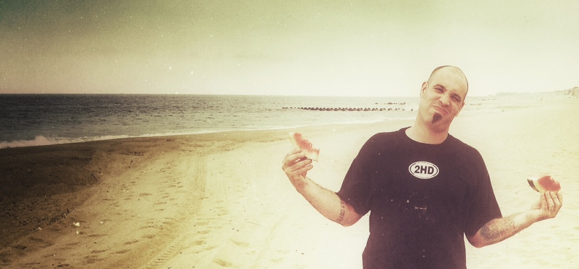

Two Hour Delay
LIVE · ORIGINAL · MUSIC ! ...in central New York


♫ 2HD Live Archive ♫


Two Hour Delay "swims inside of a dynamic that subtly defies many of the clichés into which many working bands have a tendency to fall."
- Matt Mamau, Syracuse New Times
Email Added. Thanks!'; } ?>"Deftly blending influences from blues, folk, country, bluegrass and good ol' rock'n'roll, Two Hour Delay has produced a dynamic disc of amazing Americana."
- Russ Tarby, Downtown After Dark, The Eagle

Purchase our debut CD online via Paypal!
♫ 2HD Live Archive ♫
Contact - two.hour.delay@gmail.com
